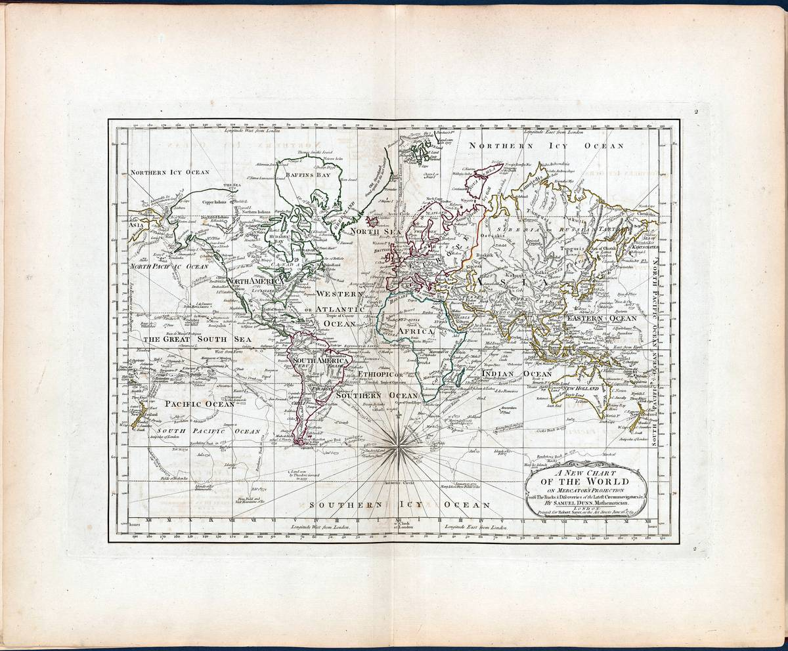
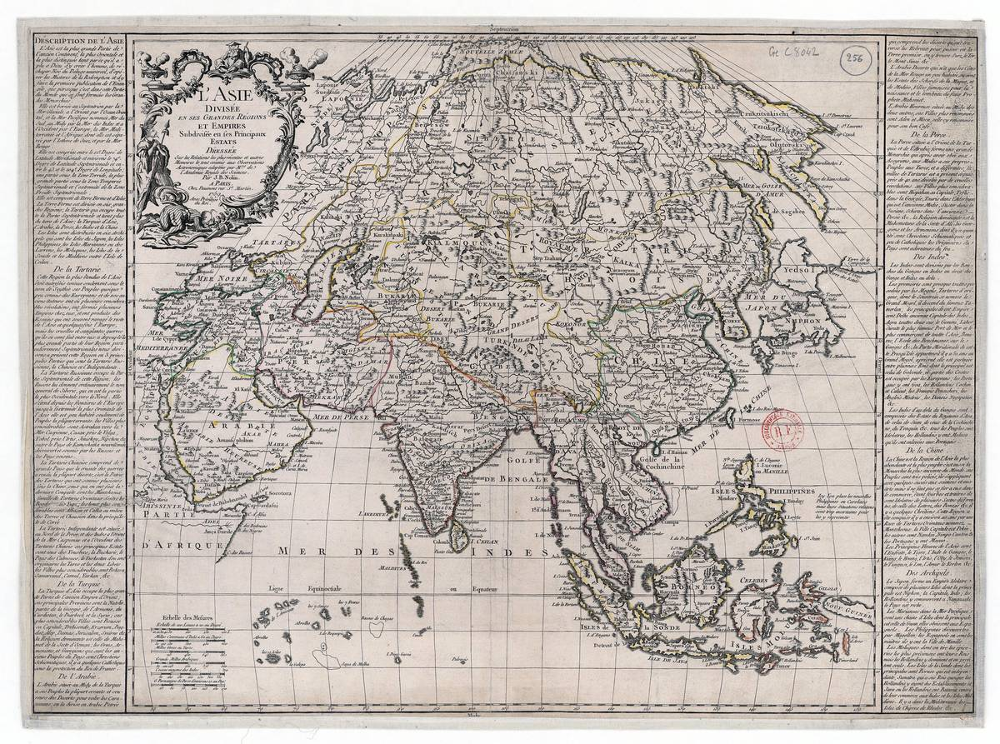
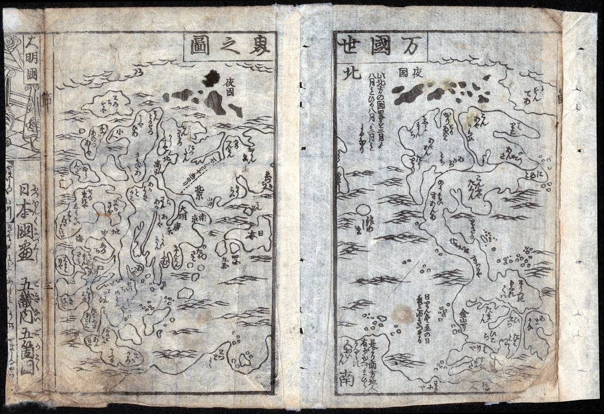
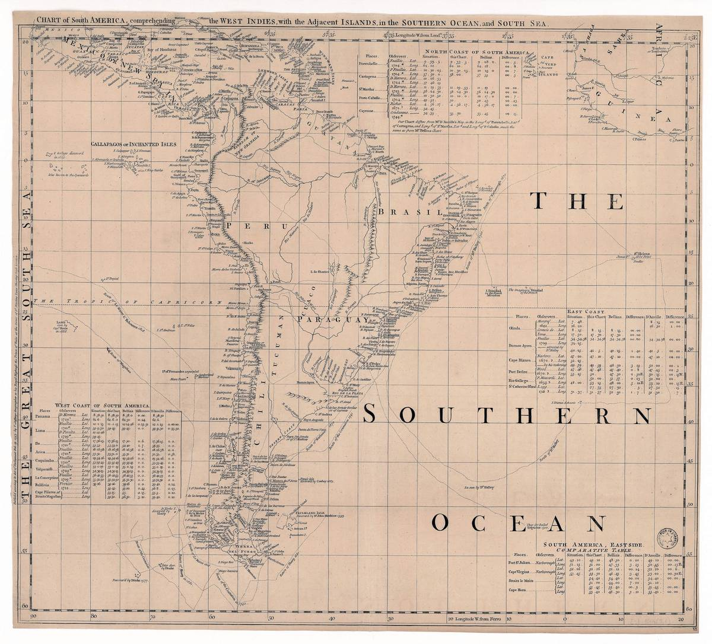
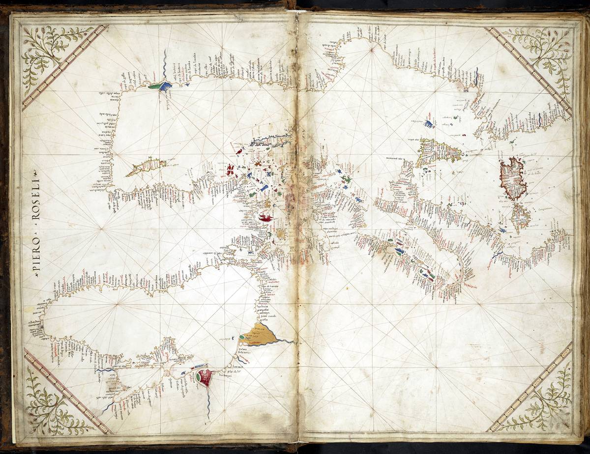
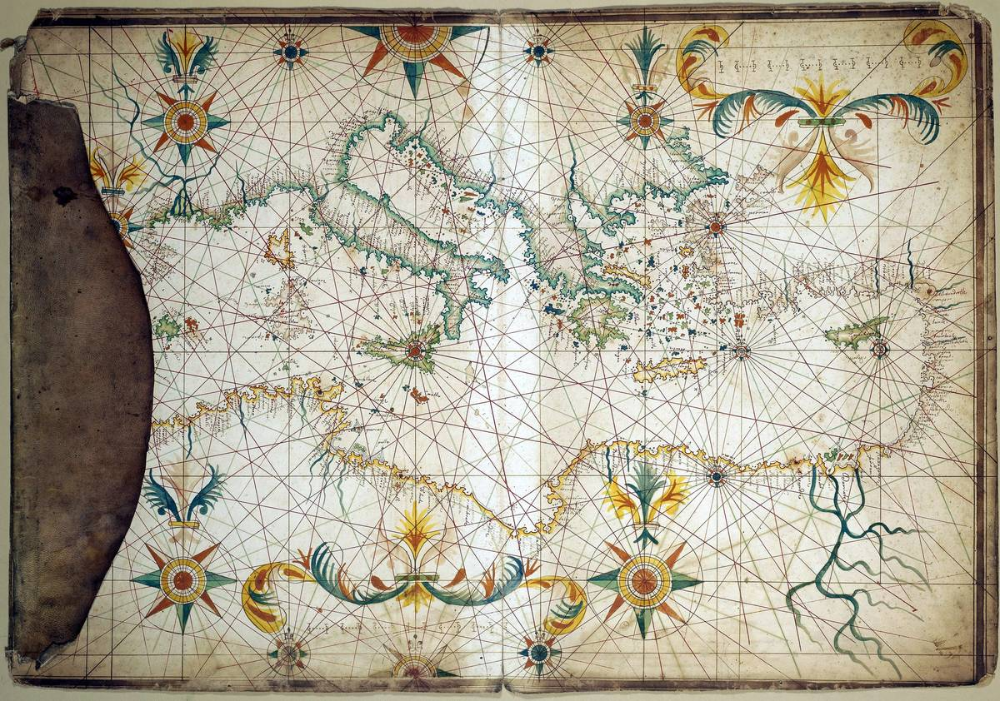
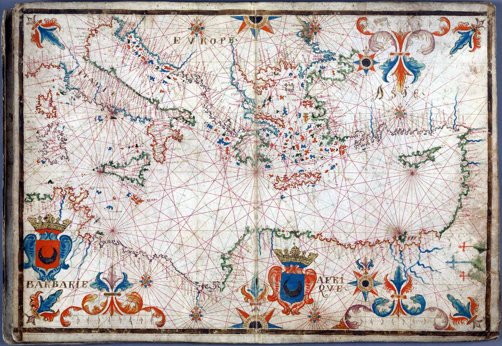
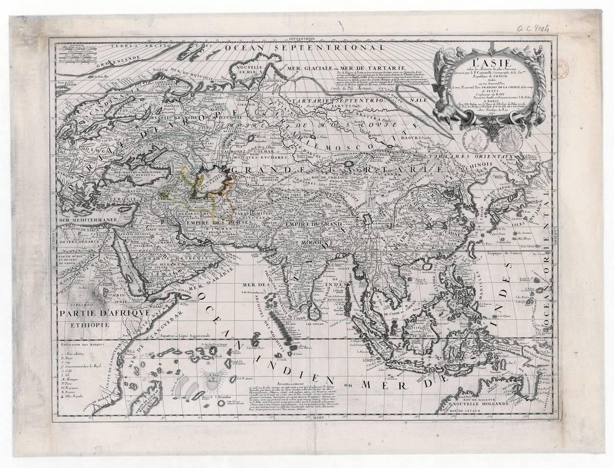
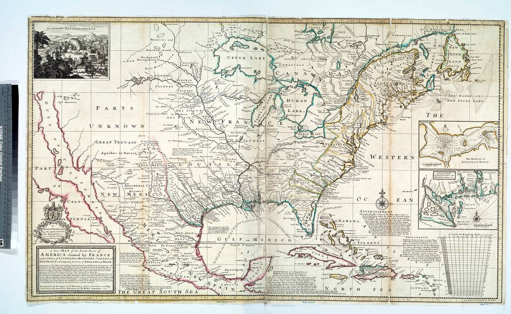
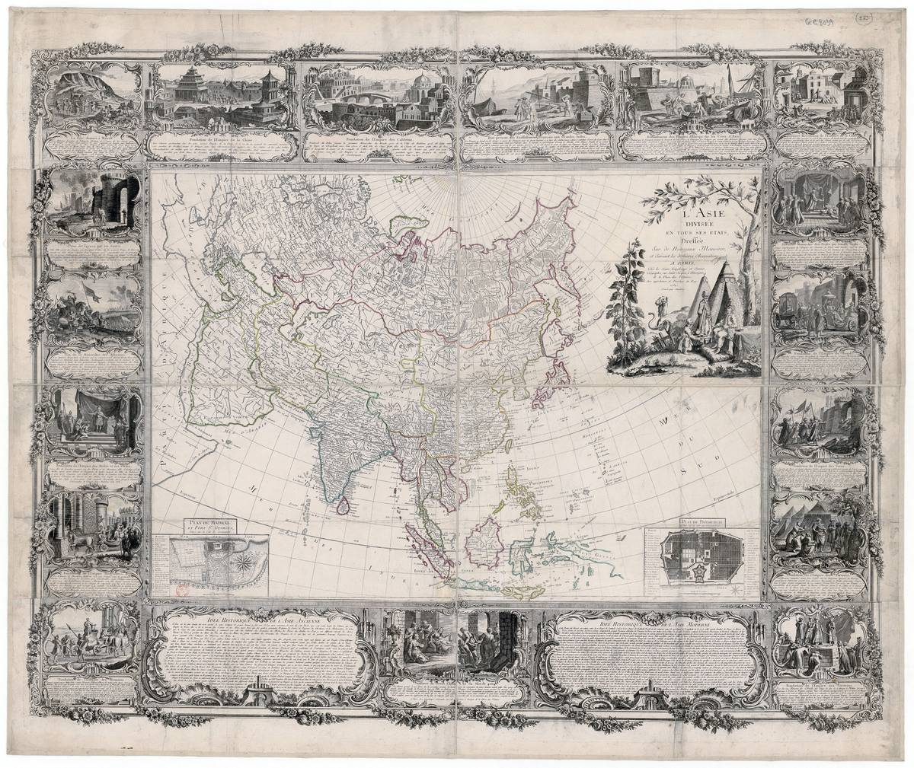

The Primary
Source
Antique maps, manuscripts, and ephemera — the raw paperwork of history, restored for classrooms, researchers, and anyone who's ever gotten lost in an old atlas on purpose.
Antique Maps: 100 Restored Vintage Maps
One hundred cartographic prints spanning four centuries — world maps from the age of exploration, hand-colored city plans, nautical charts with sea monsters in the margins where they belong. Fold lines flattened, foxing reduced, coastlines sharpened. Each map's public-domain status verified and documented.
- 100 high-resolution JPGs — every map prints at 8×10″ or larger at 300 DPI
- World maps, city plans, and nautical charts, 1500s through 1930
- Themed PDF index organized by region and era
- Provenance CSV: title, cartographer, date, source, and public-domain basis per map
The full pack (Personal $16 / Commercial $59) is being cataloged and unlocks soon. Ten maps free now — frame one and tell people it's older than your house.
Buy links appear here the moment the full pack drops. Teachers: classroom and site-license tiers are coming with the full release.









